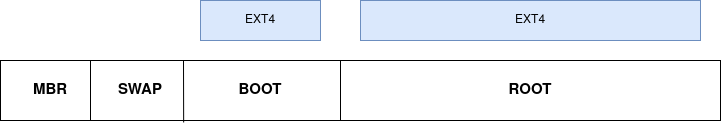

Disk Encryption
Disclaimer
Assume all commands in this presentation could cause permanent loss of data
System: HDD on a BIOS motherboard
Storage Layers
Partitions
parted /dev/sda mklabel gpt
parted /dev/sda mkpart SWAP linux-swap 1MiB 1GiB
parted /dev/sda mkpart BOOT ext4 1GiB 2GiB
parted /dev/sda mkpart ROOT ext4 2GiB 100%
File Systems
mkfs.ext4 /dev/sda2
mkfs.ext4 /dev/sda3

mount /dev/sda3 /mnt
ls /mnt
$ df -h
Filesystem Size Used Avail Use% Mounted on
/dev/sda3 219G 177G 32G 85% /
/dev/sda2 256M 93M 164M 37% /boot
$ cat /etc/fstab
# Static information about the filesystems.
# See fstab(5) for details.
#<file system> <dir> <type> <options> <dump> <pass>
/dev/sda3 / ext4 rw,relatime 0 0
/dev/sda2 /boot vfat rw,relatime 0 0
Encryption
dm-crypt / LUKS
# Securely erase the drive
shred /dev/sda3
# Encrypt the partition
cryptsetup luksFormat /dev/sda3
# --> Enter Password <--
cryptsetup open /dev/sda3 cryptroot
# --> Enter Password <--
mkfs.ext4 /dev/mapper/cryptroot
mount /dev/mapper/cryptroot /mnt
Boot Sequence
- Load the bootloader
- Load the kernel and initial ram disk (initrd)
- Mount the root file system and execute
init
Note: This might be configured differently on your distro
Configure your initrd:
$ grep '^HOOKS=' /etc/mkinitcpio.conf
HOOKS="base udev block autodetect keyboard modconf encrypt filesystems fsck"
$ mkinitcpio -P
Kernel Parameters:
$ grep '^options' /boot/loader/entries/arch.conf
options cryptdevice=/dev/disk/by-uuid/b8a9981b-3746-4635-8820-7ef6b333b90c:rc root=/dev/mapper/rc rw
Details
MBR vs GPT
BIOS vs UEFI
SSDs
Wear Leveling
Never shred on an SSD
Use Secure Erase
hdparm --user-master u --security-set-pass ${PASSWORD} /dev/sda
hdparm --user-master u --security-erase ${PASSWORD} /dev/sda
Compression
Some drives have automatic compression to improve performance
NVME Drives
If you have an NVME SSD, your device paths will look like this:
$ lsblk
NAME MAJ:MIN RM SIZE RO TYPE MOUNTPOINT
nvme0n1 259:0 0 238.5G 0 disk
├─nvme0n1p1 259:1 0 260M 0 part /boot
├─nvme0n1p2 259:2 0 16M 0 part
├─nvme0n1p3 259:3 0 1000M 0 part /
GParted